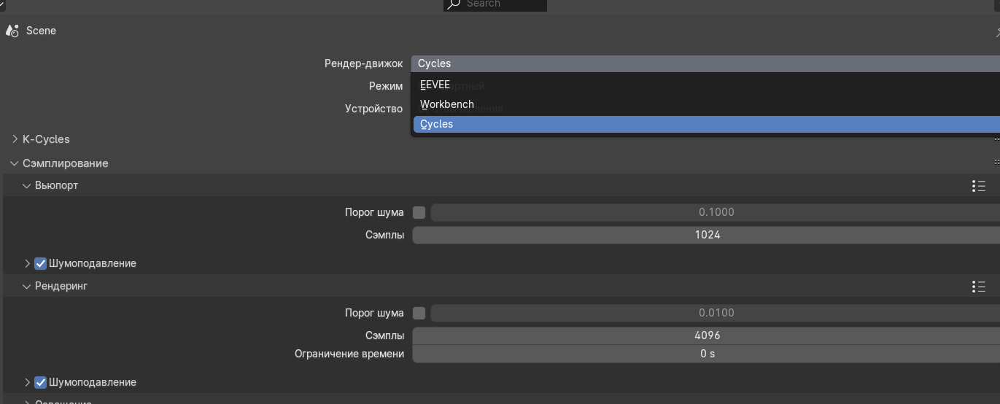
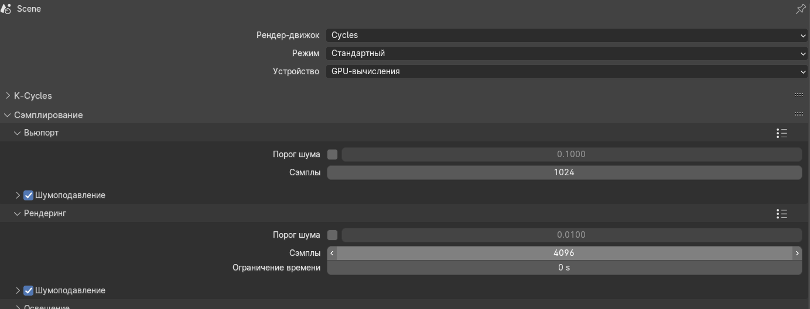

Сегодня мы берём сцену с дня 3 и делаем финальный кадр в Cycles. Логика простая: Workbench помогает настраивать сцену, Eevee ускоряет итерации, а Cycles даёт лучшее качество.
Камера и композиция
Перед финальным запуском рендера убедитесь, что камера и ракурс уже “продают” ротонду и берег.

Terrain / plane: модификатор земли
Рельеф влияет на то, как “ложится” свет и как читается берег у воды.

plane: быстро добавляет неровности.
Настройки Cycles (шум, сэмплы, GPU)
Перед финальным запуском проверьте параметры, которые сильнее всего влияют на качество/скорость: выбор режима, устройство (GPU), шумоподавление, пороги и число сэмплов.


Финальный рендер в Cycles

Почему Cycles лучше (и чем отличается от Eevee/Workbench)
- Физическая точность (особенно вода). Cycles считает отражения/преломления как путь света, поэтому вода выглядит стабильнее: меньше “стеклянных” артефактов и больше правдоподобных бликов.
- Глобальный свет. Тени и контактные области мягче и “собраннее” (особенно вокруг камней и колонн). В Eevee часть света и отражений считается быстрее, но менее точно.
- Качество материалов. PBR + нормали/roughness в Cycles читаются “глубже”, поэтому земля, камень и вода выглядят объемнее.
- Eevee vs Cycles по смыслу. Eevee — для итераций; Cycles — для финального качества.
- Третий режим: Workbench. Workbench нужен, чтобы быстро настраивать сцену без долгого ожидания, но не для итогового кадра.
Что крутить для хорошего Cycles-результата
- GPU-вычисления (если есть видеокарта) — ускоряют рендер.
- Denoise и/или разумные Samples: сначала сделайте “пробу”, потом увеличьте для финала.
- Light/World и экспозицию: лучше сразу попасть в баланс, чем “душить шум” потом.
- Старайтесь не менять материалы в последний момент: лучше 1–2 финальные правки и потом рендерить.